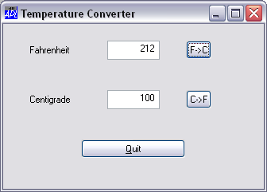

Before we test our application, it would be a good idea to )SAVE the workspace. If you remember, the QUIT callback calls ⎕OFF, so if we don't want to lose our work...
)SAVE TEMP TEMP saved ...
Note that the GUI objects we have created are all saved with the workspace. You don't have to re-build them every time you )LOAD it again.
If this was a Run-Time application, we would have to use ⎕DQ to run it. However, as it is not, we can just go ahead and use it from the Session. Click on the Fahrenheit edit field and enter a number (say 212). Now click on the "F->C" button. The Temperature Converter window should look like the picture below.

If you have mis-typed any of the functions in this example, you may get an error. If this happens, don't worry; simply correct the error as you would with any other APL application, and type →⎕LC.
If you got a VALUE ERROR error, you have probably mis-spelt the name of the callback function. If so, you can fix it using ⎕WS to reset the appropriate Event property.
Don't click the "Quit" button or close the window (yet). If you do so your APL session will terminate.
If you want to follow what is happening you can use the Tracer. This requires a statement to trace, so we will use ⎕DQ just as you would in a real application. To do this, type ⎕DQ '.' in the Session window, then, instead of pressing Enter (to execute it), press Ctrl+Enter (to Trace it). Having done this, enter your data into one of the edit fields and click the "F->C" or "C->F" buttons as before. When you do so, your callback function will pop-up in a Trace Window. Step it through (if in doubt, see the section on the Tracer) and watch how it works. When the callback has finished, its Trace window disappears. Don’t forget, you are running a ⎕DQ. To terminate it, press Ctrl+Break or select Interrupt from the Action menu.